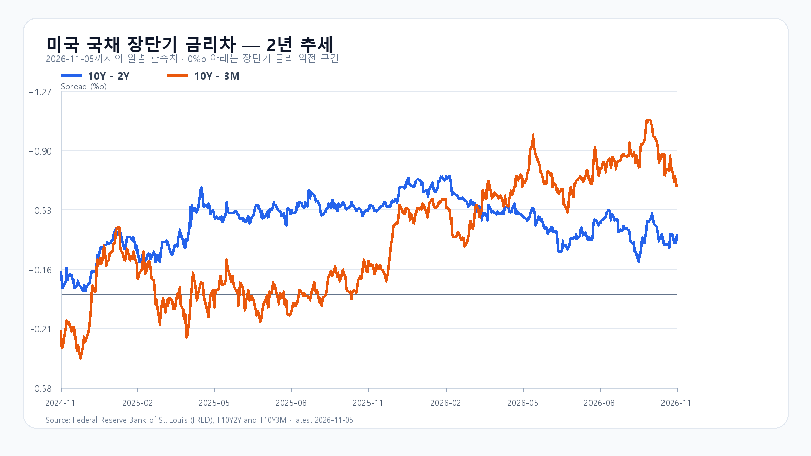
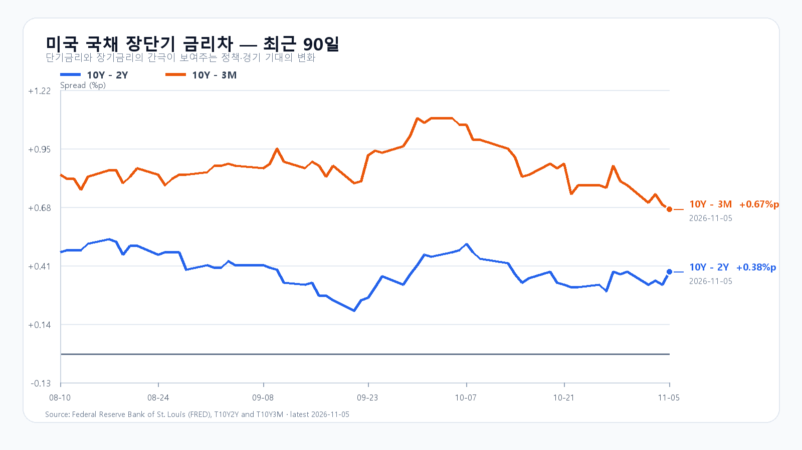

미국 반도체주가 다시 크게 밀렸습니다. 한국 증시는 전날 이미 5% 넘게 하락했지만, 그 뒤 미국 정규장에서 매도가 더 거세졌고 원화도 약해졌습니다. 오늘 코스피는 낙폭만 보고 반등을 기대하기보다 삼성전자·SK하이닉스가 추가 매물을 받아낼 수 있는지부터 살펴야 합니다.
미국 매도는 반도체 전반으로 번졌다
5일 미국 정규장에서 QQQ는 6.49%, TQQQ는 18.92%, SMH는 11.21% 하락했습니다. Nvidia는 9.26%, AMD는 17.26%, Micron은 17.46%, Broadcom은 10.43% 떨어졌습니다. QQQ는 일중 저가에서 끝났고 AMD와 Micron도 저가 부근으로 밀렸습니다. 장중 반등 시도가 종가까지 매물을 이기지 못한 모습입니다.
SOXX는 3대 1 분할을 반영한 정규장 기준 12.15% 하락했습니다. 주식 수 증가로 낮아진 주당 가격까지 손실로 계산하면 실제 하락폭을 크게 부풀리게 됩니다.
미국 중간선거 뒤 AI 데이터센터 건설 규제가 강화될 수 있다는 우려가 관련주 가격에 반영되고 있습니다. 이는 향후 투자 속도에 대한 시장의 판단입니다. 모든 기업의 설비투자가 취소됐거나 메모리 주문이 일제히 끊겼다는 확정 사실과는 구분해야 합니다.
스마트폰 부진과 AI 수요를 나눠 봐야 한다
Qualcomm 공시에서 4분기 핸드셋 매출은 51억3,700만달러로 전년보다 26% 줄었습니다. 반면 회사는 2027회계연도 데이터센터 매출 목표 50억달러를 유지했습니다. 소비자 기기 부진과 데이터센터 사업 확대가 공존합니다. 이 실적은 5일 한국장 개장 전에 공개됐으므로 오늘 새로운 실적 충격으로 다시 더하지 않습니다. 이후 미국장에서 확대된 업종 매도가 오늘의 추가 부담입니다.
메모리 현물은 내렸지만 장기 수요 전망은 유지됐다
5일 대만시간 18:10 DRAM 현물에서 DDR5 16Gb 평균은 60.667달러로 1.09%, DDR4 16Gb는 81.679달러로 0.30% 내렸습니다. 범용 현물가격 약세는 단기 재고와 가격 협상에 부담입니다. 다만 HBM·서버 DRAM·eSSD 계약가격과 같은 지표는 아닙니다.
TrendForce는 같은 날 2027년 세계 AI 서버 출하량이 36% 증가할 것으로 전망했습니다. 장기 수요 기대가 남아 있어도 자금조달 비용과 정책 변화가 투자 집행 시점을 늦추면 주가는 먼저 조정받을 수 있습니다. 오늘은 실수요 전망과 주식 매도를 한 방향으로 단순화하지 않는 편이 타당합니다. NAND·RDIMM의 공개 가격표는 기준일이 더 오래돼 당일 변화 판단에는 쓰기 어렵습니다.
환율 상승이 금리 하락의 효과를 누른다
원·달러 하나은행 고시환율은 6일 07:30:05 기준 1,357.00원으로 전회 대비 14.50원 높았습니다. 서울 현물환의 개장 체결가와는 다릅니다. 미국 금리가 내려도 원화 약세와 반도체 매도가 겹치면 국내 성장주의 반등을 제약할 수 있습니다.
FRED 최신 금리차는 5일 기준 10년-2년 0.38%포인트, 10년-3개월 0.67%포인트입니다. 개별 만기 수익률은 4일 기준 3개월 4.21%, 2년 4.58%, 10년 4.90%입니다. 금리차와 개별 금리의 관측일이 다릅니다. 10년-2년 차 확대만으로 경기 낙관을 뜻한다고 볼 수 없고, 단기물의 하락 속도와 안전자산 수요를 함께 봐야 합니다.
전일 급락을 오늘 한 번 더 빼지는 않는다
전일 코스피는 시가 5,580.09, 고가 5,586.46, 저가 5,336.88을 거쳐 5,383.80으로 5.28% 하락했습니다. KODEX 레버리지는 11.35% 내린 62,500원이며 저가는 61,500원이었습니다. 정책 우려와 기존 실적 부담은 이 가격에 이미 일부 반영됐습니다. 미국 ETF 하락률을 오늘 한국장 하락률로 그대로 옮기지 않는 이유입니다.
국내 외국인 현물과 선물, 프로그램이 함께 돌아서는지가 반등의 지속성을 가릅니다. 개장 전 수급표의 0은 오늘 거래 결과가 아닙니다. 메모리주만 반등하고 하락 종목이 계속 늘면 시장 전체의 회복으로 판단하기 이릅니다. 전일 전망은 기본 범위를 벗어나 약세 종가 범위에서 끝났습니다. 개별 수급 조건과 발행 후 경로의 적중 여부는 별도 확인이 필요합니다.
오늘의 범위와 대응
기본 종가 범위는 5,050~5,350, 확률은 45%로 둡니다. 개장 매물을 소화하고 환율 상승이 진정되며 메모리주가 저점을 높이는 경우입니다. 외국인·프로그램 동반 순매수와 함께 5,350을 넘으면 강세 범위 5,350 초과~5,550(15%)을 봅니다. 5,050 아래에서 외국인·프로그램 매도가 이어지면 약세 범위 4,800~5,050 미만(40%)입니다. 경계값은 기본 범위에 배정하며 각 범위를 이탈하면 해당 시나리오는 무효입니다. 장중 예상 저가·고가 포락은 4,700~5,650으로 종가 범위와 구분합니다.
공격 5·관망 30·방어 65로 방어 비중을 높입니다. KODEX는 전일 저가 61,500원, 종가 62,500원, 시가 67,995원을 기준선으로 봅니다. 아래로 갭이 생기면 61,500원은 지지 확인선에서 회복 여부를 볼 선으로 바뀝니다. 반등 때는 가격 회복과 거래량, 외국인·프로그램 동행을 함께 봅니다. 큰 낙폭 자체를 추가매수 근거로 삼지 않습니다.
오늘 밤 고용지표까지 남았다
미국 10월 고용보고서는 오늘 22:30 KST, 미국 동부시간 08:30에 나옵니다. 고용 둔화는 금리 부담을 낮출 수 있지만 경기 우려도 키웁니다. 다음 주요 일정은 10일 22:30 KST 미국 CPI입니다. 장중 판단은 09:30 첫 수급, 10:30 저점 유지, 14:00 이후 수급 가속 여부 순서로 다시 점검합니다.
발행 기준 시세
| 항목 | 값 | 원천 기준 시각 |
|---|---|---|
| KOSPI 전일 종가 | 5,383.80 | 2026-11-05T15:30:00+09:00 |
| KODEX 전일 종가 | 62,500원 | 2026-11-05T15:30:00+09:00 |
| USD/KRW 하나은행 고시 | 1,357.00원 | 2026-11-06T07:30:05+09:00 |
| NQF 최근 거래 | 26,604.00 | 2026-11-06T06:59:59+09:00 |
| ESF 최근 거래 | 7,353.00 | 2026-11-06T06:59:59+09:00 |
| BZF 최근 거래 | 99.25 | 2026-11-06T06:59:52+09:00 |
| CLF 최근 거래 | 91.20 | 2026-11-06T06:59:59+09:00 |
미국 정규장 OHLC
| 종목 | 시가 USD | 고가 | 저가 | 종가 | 등락 |
|---|---|---|---|---|---|
| QQQ | 683.12 | 683.64 | 647.05 | 647.05 | -6.49% |
| TQQQ | 59.83 | 59.99 | 50.25 | 50.47 | -18.92% |
| SOXX | 143.08 | 143.73 | 130.75 | 131.90 | -12.15% |
| SMH | 482.14 | 483.89 | 445.59 | 447.73 | -11.21% |
| NVDA | 196.07 | 196.25 | 181.46 | 181.60 | -9.26% |
| AMD | 452.50 | 456.20 | 402.10 | 404.40 | -17.26% |
| MU | 752.69 | 761.81 | 650.00 | 656.39 | -17.46% |
| AVGO | 311.89 | 314.00 | 290.12 | 291.53 | -10.43% |
미국 시간외
시간외 수치는 정규장 종가 대비이며 정규장 등락률과 합산하지 않습니다.
| 종목 | 시간외 USD | 정규장 대비 | 원천 시각 KST |
|---|---|---|---|
| NVDA | 182.12 | +0.29% | 2026-11-06T08:02:23+09:00 |
| AMD | 408.52 | +1.02% | 2026-11-06T08:02:18+09:00 |
| MU | 665.10 | +1.33% | 2026-11-06T08:02:23+09:00 |
| AVGO | 292.44 | +0.31% | 2026-11-06T08:02:04+09:00 |
미국 금리차

